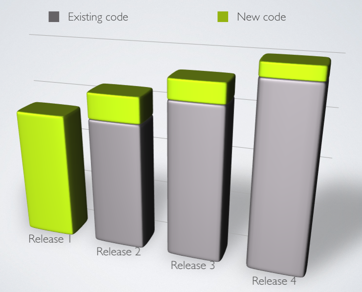
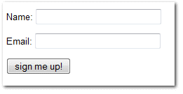
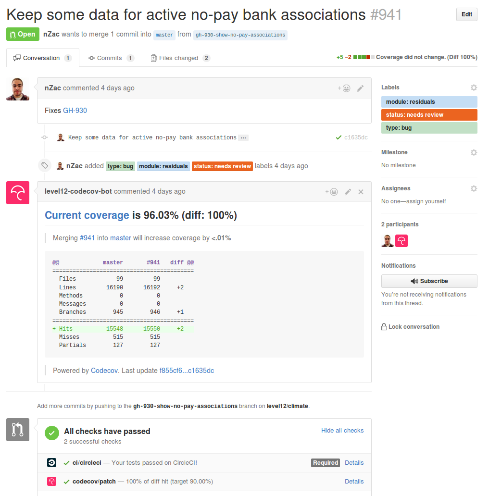
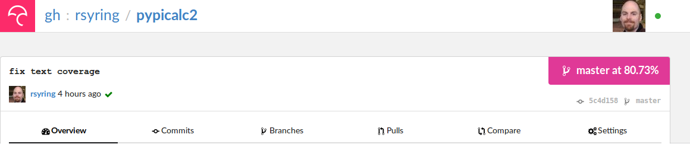
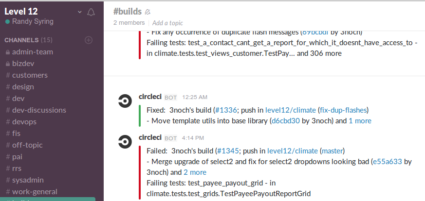
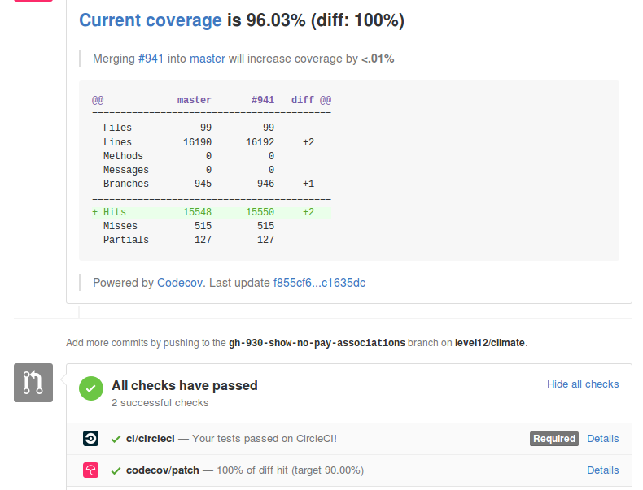

Automation for the Win!
By: Randy Syring
Twitter: @RandySyring
Impassioned Software Craftsmanship

Introduction
I'm the Chief Executive Developer at Level 12.
Level 12 is a software development firm specializing in web and data(base) applications.
We build custom software to address complex business problems.
We are particularily passionate about:
- Productivity – Invest time, talent, and resources for significant value
- Craftsmanship – this goes beyond technical competence, we are passionate about building
software the right way.
Note
- I'm the founder of Level 12. I've been working with databases and web applications for
for over 15 years.
- I've been working directly with customers on custom projects for about 12 years.
- My customers aren't "big players."
- They are generally naive about software development best practices.
- They generally care about our responsiveness, product quality, and cost (ROI).
- If we can make time for testing & automation, it's likely you can too.
What's your real world?
- Developer, QA, Management, or ?
- Full or multi-stack developers?
- Small business, medium business, enterprise, mammoth?
- Have solid automated testing and processes in place?
Note
- BUILD!!
- I like interaction, get a sense of who I'm talking to.
This Presentation
- Guiding Principles
- Encouragement
- Technical summary of layers involved
- Questions
Note
- NOT going to show in-depth config or coding
- I really would like interaction, I want to get the thinking juices going. Please speak up.
Learning Curve Paralysis
Technology fatigue is real, but this is worth it.
Note
- technology fatigue is worst when?
- Yes, at conferences!!!
- Who has attended conferences before? How many things do you actually follow up on?
- One piece of advice: take one thing away from this conference that you will act on, maybe two.
- This is really, really, really worth it.
- Replacing fear of failure and pressure with confidence.
My Goal?

Note
- NO!
- I'm not on an automation or testing bandwagon.
- I'm a slow adopter, value is really important.
- I have long-term goals that dictate the necessity of automation.
- But before I tell you more....
What's Your Goal?
No...REALLY...What are the guiding principles that govern how you build software?
My Software Development Goal
To sustainably:
- Respond to change with minimal friction
- Frequently deliver highly functional software
Four components: flexibility, velocity, quality, & cost
Note
- Find the four components in the goal.
- Tension exists, we need something to help us relieve the tension.
- What is this? Yes, Agile.
- Quick question: is Scrum agile? Is Agile scrum?. Agile is not Scrum.
- Agile is a set of principles, Google Agile Manifesto for more info.
- This goal is "truly agile".
- Remember the title of this talk. This is my win! Autmation for "truly agile" dev.
- Agree or Strongly Agree that this is a noble goal for just about any dev team?
Delivering on that Goal
assert: Without heavy use of automated processes, especially testing, a "truly agile" workflow
is impossible.
Note
- two components automated: testing and processes
- This presentation attempts to convince this is true
CI without Automated Tests
Neutered.
(Unless you are compiling something)
Note
- Start with quality tests suite.
- We operated for years with automated tests that ran on the dev's machine (not CI)
- Your largest ROI will be in building the test suite, I can't really emphasize that enough.
Let's talk about Tests!
- Are you usually testing your code?
- Do you have automated tests for your code?
Note
- BUILD!!
- How much of your time is spent testing functionality vs writing code?
- If no, why?
- If yes, % of production code covered by tests?
- If yes, who writes those automated tests: developers or dedicated QA peeps?
Developers Need to Write Tests
assert: If developers are not creating automated tests in parallel with the production code, a
truly agile workflow is unsustainable.
Note
- Quick iterations and frequent changes cause bugs. How do I ensure highly functional software?
- Automated or manual?
- Who writes the tests? Devs or QA
- When are they written? With the code or later?
Manual Testing is Unsustainable

Note
- How hard is it to manually test just the new functionality or bug fixes?
- How much regression testing can be done?
- If you have QA staff for this, is it reasonable to expect them to cover all the old
functionality?
- Over time, regression testing will cover less and less code or the testing will just stop
being done.
Manual Testing is a Losing Battle
Testing: Asset or Expense
- Manual testing is an expense
- Automated testing is mostly an asset, with maintenance related expenses
Note
- Who is doing this manual testing, what is their time worth?
- Automated tests contribute to the long-term value of your application.
- A commitment to manual testing (explicit or implicit) is usually a commitment to build software that
that is poorly tested.
Automated Testing Saves Time
No...really.
In both the short-term and the long-term.
Note
- Why don't you test...it takes too much time.
- No one cares about sofware asset value, they simply want me to ship the next thing.
I Don't Need No Stink'n Tests

I Don't...Need....ummm...help?

Note
- Yes, this is a little self-serving, not your average form
- Is our software typically simple or complex?
- Complex software is usually difficult to setup test cases for. 17 layers of DB objects.
Time Savings Overall

Note
- Does manual testing really get done thoroughly? We've already said that's unlikely.
- But I believe the graph still holds true because as software matures, if manual testing is
relied upon, the software development process becomes increasingly brittle and error prone,
slowing down developers, and forcing the organization to invest lots of time into manually
ensuring the software is not broken.
- That can affect developers, QA staff, management, and customers as releases are delayed and
even simple changes take months to get released.
- Manual testing leads to slow and fear-driven development. Automated testing wins.
Who Tests?
Devs or QA?
Note
- I'm not slamming QA, I'll come back to the role of QA.
- Are their usually more devs or QA peeps? Can QA really keep up?
- Who usually understands the complexity and nuances better, devs or QA?
- Is QA able to test as well as devs? Automated tests are code, who is usually most skilled
at writing code?
- A commitment to QA testing instead of devs is usually a result of giving lip service to
agile and/or automated testing.
When to Test?
Test in parallel (TDD or immediately after) or test "later?"
Note
- When is the best time to test? When the problem is fresh or stale?
- Can tests be an asset to the developer in helping them write better code? Corner cases?
- Let's be honest, how often do tests really get written "later"?
- A commitment to test "later" is usually a commitment to test poorly or not at all.
A Final Plea
- Manual testing is not sustainable, code quality will continually decrease as complexity increases.
- Devs are already testing, capture the value!
- Use devs for what they are good at (writing code to deal with repetition)
- Use QA peeps for what they are good at (break it!, UI/UX, non-repetitive)
- Just get started. An object at rest...
- Keep at it, it will become natural
I Practice What I Preach
| |
Proj A |
Proj B |
|---|
| Age |
6+ years |
1.5 years |
| Python Tests |
8,294 |
1,444 |
| JS Tests |
309 |
0 |
| DB Tables |
200+ |
35+ |
| Python LoC |
145K |
26.5K |
| Python Test LoC |
61K (42%) |
14.7K (55%) |
| Code Coverage |
95% |
96% |
| Test Time |
39:04 (/4) |
6:58 |
Release interval: whenever (multiple times per day if needed)
Note
- This isn't bragging, I just want to show you that it is doable.
- I also want to give you some stats.
- Notice the % LOC. Who thinks the % LOC seems like a waste?
- Anyone part of a 6 year project without automated tests? How often are your releases and how
confident are you that you are not breaking things?
Delivering on my Goal (CI)
Without heavy use of automated processes, especially testing, a truly agile workflow is impossible.
Note
- To sustainable respond to change with minimal friction and frequently deliver highly
functional software.
- I've talked about the testing part, but now I'm switching focus to the process of getting
code from the developer's level to the ready-to-release level.
Our Development Workflow
- Development on Git branch (prefer small changes)
- PR for merge
- Review code diff
- Validate all tests pass
- Validate linting
- Validate code coverage
- Some changes require manual QA
Note
- Does this seem reasonable?
- Will this contribute significantly to my "truly agile" goal?
- This is great, but, it's a bit verbose.
Workflow Execution without Automation
How likely is it that workflow will get executed for every merge to master if not automated?
Note
- I've never met a developer that likes manual and repetitive tasks.
- If he or she can't automate it, they will usually find a way to stop doing it.
- So, let's automate.
Automated Workflow

Note
- Development on Git branch (prefer small changes)
- PR for merge
- Review code diff
- Validate all tests pass
- Validate linting
- Validate code coverage
- My dev's have no excuse for not following our workflow guidelines.
- The only part of my workflow that isn't automated is when manual QA is needed.
More than a Process
It's about culture.
Note
- Good development practices are enforced through automation.
- Enforce it or don't do it.
- Leadership: invest in making important things easy.
CI: Eat the Elephant
Getting CI to run correctly is often frustrating. Rabbit holes galore.
Focus on constant incremental improvements, building layer by layer.
CI Example Project
https://github.com/rsyring/pypicalc2
Speaking of Layers
- Tests/Linting/Coverage in a Virtual Env
- Dependencies
- Tox
- Docker
- CI (with Circle CI)
- Code Coverage
- Service Integration (Slack, GitHub, Email)
In Virtualenv
(pypicalc2)$ py.test pypicalc/
......................................
38 passed in 0.12 seconds
(pypicalc2)$ flake8 pypicalc/
(pypicalc2)$
With Code Coverage
(pypicalc2)$ py.test --cov pypicalc --cov-config .coveragerc pypicalc/
......................................
---------------------------------- coverage: platform linux, python 3.5.2-final-0 -----------------------------------
Name Stmts Miss Branch BrPart Cover
---------------------------------------------------------------------------
pypicalc/app.py 11 0 0 0 100%
pypicalc/cli.py 8 0 0 0 100%
...<snip>...
pypicalc/tests/test_web_request_3.py 27 6 4 0 68%
pypicalc/tests/test_web_request_4.py 18 1 4 1 91%
pypicalc/version.py 1 0 0 0 100%
pypicalc/views.py 13 0 2 0 100%
---------------------------------------------------------------------------
TOTAL 628 102 115 19 78%
38 passed in 0.24 seconds
Speaking of Layers
- Tests/Linting/Coverage in a Virtual Env
- Dependencies
- Tox
- Docker
- CI (with Circle CI)
- Code Coverage
- Service Integration (Slack, GitHub, Email)
Dependencies
$ tree requirements/
requirements/
├── deployed-env.txt
├── dev-env.txt
├── includes
│ ├── build-only.txt
│ ├── ci.txt
│ ├── common.txt
│ ├── dev.txt
│ └── install-only.txt
├── wheelhouse
│ ├── appdirs-1.4.0-py2.py3-none-any.whl
│ ├── arrow-0.7.0-py3-none-any.whl
│ ├── ...<snip>...
└── wheelhouse-build.txt
Speaking of Layers
- Tests/Linting/Coverage in a Virtual Env
- Dependencies
- Tox
- Docker
- CI (with Circle CI)
- Code Coverage
- Service Integration (Slack, GitHub, Email)
Tox Summary
- Creates virtualenvs
- Installs dependencies from wheelhouse
- Runs the tests w/ coverage
- Runs the linter
- Fails with a non-zero exit code if applicable
Tox
$ tox
py35 runtests: commands[0] | pip install -r requirements/deployed-env.txt
Ignoring indexes: https://pypi.python.org/simple
Collecting Keg (from -r requirements/includes/install-only.txt (line 1))
...<snip>...
Installing collected packages: MarkupSafe, Jinja2, Werkzeug, itsdangerous, Flask, appdirs, blinker, pathlib, Click, wrapt, six, BlazeUtils, SQLAlchemy,
...<snip>...
py35 runtests: commands[1] | py.test -c .ci/pytest.ini -ra --tb native --strict --cov pypicalc --cov-config .coveragerc --cov-report xml --no-cov-on-fail --junit-xml=/home/rsyring/projects/pypicalc2-src/.ci/test-reports/py35.pytests.xml pypicalc
================================================ test session starts ================================================
platform linux -- Python 3.5.2, pytest-2.9.1, py-1.4.31, pluggy-0.3.1
rootdir: /home/rsyring/projects/pypicalc2-src, inifile: .ci/pytest.ini
plugins: cov-2.2.1
collected 38 items
pypicalc/tests/test_cli.py .
...<snip>...
pypicalc/tests/test_web_request_4.py .
------------ generated xml file: /home/rsyring/projects/pypicalc2-src/.ci/test-reports/py35.pytests.xml -------------
---------------------------------- coverage: platform linux, python 3.5.2-final-0 -----------------------------------
Coverage XML written to file coverage.xml
============================================= 38 passed in 0.30 seconds =============================================
flake8 recreate: /home/rsyring/projects/pypicalc2-src/.tox/flake8
flake8 installdeps: flake8
flake8 runtests: commands[0] | flake8 pypicalc
______________________________________________________ summary ______________________________________________________
py35: commands succeeded
flake8: commands succeeded
congratulations :)
Speaking of Layers
- Tests/Linting/Coverage in a Virtual Env
- Dependencies
- Tox
- Docker
- CI (with Circle CI)
- Code Coverage
- Service Integration (Slack, GitHub, Email)
Docker
The heart of the docker-run-tests script:
docker run \
-v $SRC_DPATH:/opt/src \
-v $ARTIFACTS_DPATH:/opt/src/.ci/artifacts \
-v $TEST_REPORTS_DPATH:/opt/src/.ci/test-reports \
$DOCKER_FLAGS \
level12/python-test-multi
Speaking of Layers
- Tests/Linting/Coverage in a Virtual Env
- Dependencies
- Tox
- Docker
- CI (with Circle CI)
- Code Coverage
- Service Integration (Slack, GitHub, Email)
CI is So Simple!! ;)
machine:
services:
- docker
test:
override:
- /home/ubuntu/$CIRCLE_PROJECT_REPONAME/docker-run-tests
Speaking of Layers
- Tests/Linting/Coverage in a Virtual Env
- Dependencies
- Tox
- Docker
- CI (with Circle CI)
- Code Coverage
- Service Integration (Slack, GitHub, Email)
Code Coverage w/ CodeCov
py.test \
...<snip>...
--cov pypicalc \
--cov-config .coveragerc \
--cov-report xml \
--no-cov-on-fail \
--junit-xml={toxinidir}/.ci/test-reports/{envname}.pytests.xml \
pypicalc
$ ls .ci/test-reports/
py35.pytests.xml
deployment:
codecov:
branch: /.-/
commands:
- bash <(curl -s https://codecov.io/bash) -t <token>
Code Coverage Result

And More
Speaking of Layers
- Tests/Linting/Coverage in a Virtual Env
- Dependencies
- Tox
- Docker
- CI (with Circle CI)
- Code Coverage
- Service Integration (Slack, GitHub, Email)
Note
- Supporting culture with visibility.
Service Integration: Slack

Service Integration: GitHub

Thanks & Questions
Thanks for attending. Any questions?
By: Randy Syring
Twitter: @RandySyring
Credits
Credits: Image Credit,
Image Credit 2,
Example Project